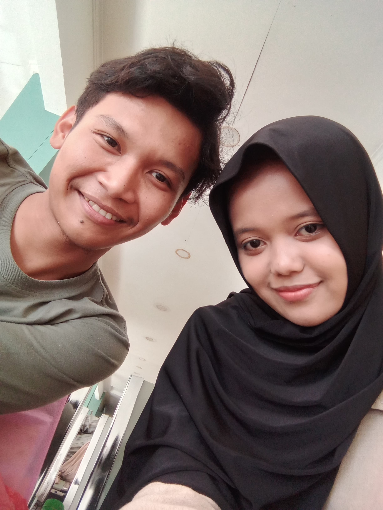

Awal Bertemu
Semua dimulai dari pertemuan yang tak terduga yaitu dm ig dan berlanjut dengan saling kenal serta dianya perhatian sekali ke saya sampe sampe saya jatuh hati ke dia nya, awal awal berbagi cerita sederhana, dan tak menyangka bahwa seseorang yang hadir di waktu itu akan menjadi bagian terindah dalam perjalanan hidup aku ke depannya.

Semakin Dekat
Seiring berjalannya waktu, komunikasi semakin sering. Ada rasa nyaman yang tumbuh perlahan, saling mendengarkan, saling mengerti, dan mulai menyadari bahwa kehadiran satu sama lain membawa kebahagiaan tersendiri.

Menjalani Hari Bersama
Mulai melangkah bersama, berbagi suka dan duka. Setiap hari yang dilalui menjadi lebih berwarna. Belajar memahami kekurangan dan kelebihan satu sama lain, serta saling mendukung untuk menjadi pribadi yang lebih baik.

Hingga Saat Ini
Kini, Muhammad Zulfi & Alifah Azzahra Kusuma Putri terus melangkah bersama. Semua cerita, tawa, dan kenangan yang terukir menjadi bukti perjalanan yang indah. Semoga kisah ini terus berlanjut, tumbuh, dan abadi selamanya.